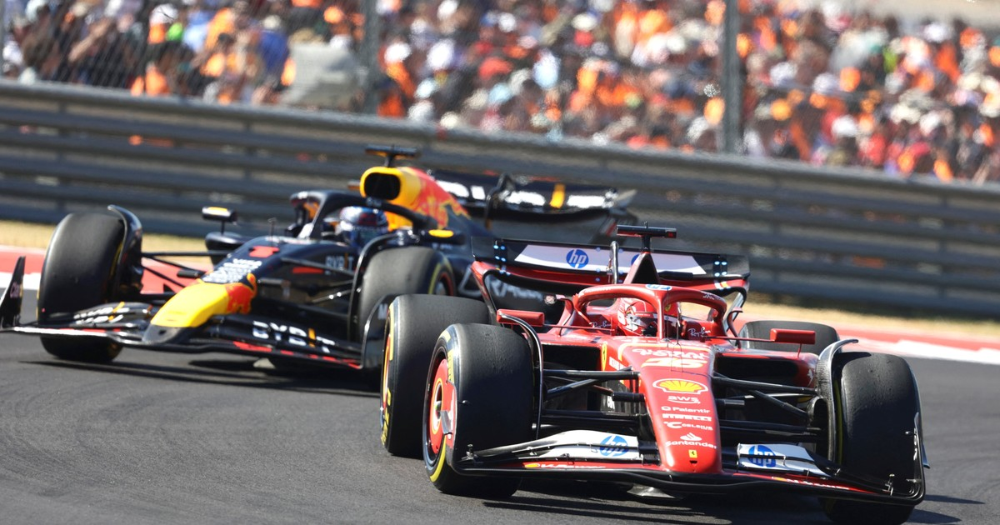

GR DE AUSTIN 2024
El Gran Premio de Fórmula 1 en Austin, Texas, se celebra en el Circuito de las Américas (COTA), una de las sedes más emocionantes del calendario desde su inauguración en 2012. Este circuito es famoso por su empinada subida hacia la primera curva y sus 20 complejas curvas distribuidas en 5.513 kilómetros de pista, lo que lo convierte en un reto tanto para pilotos como para equipos
